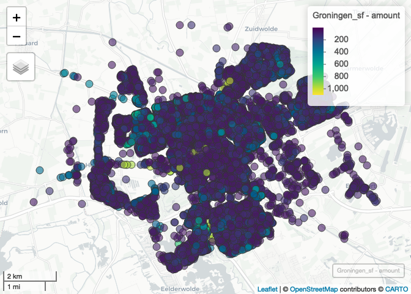
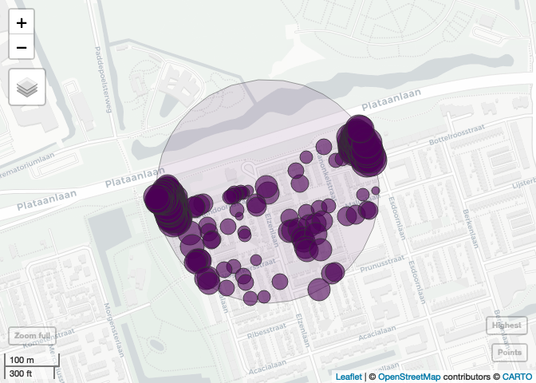
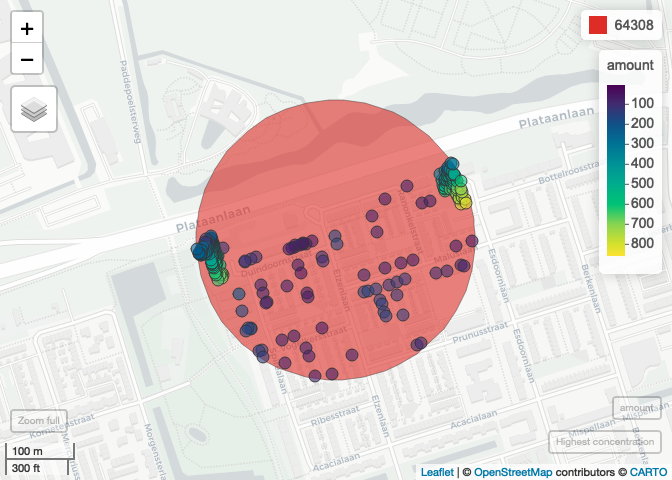
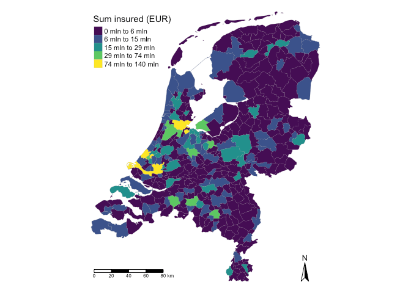

spatialrisk is specifically designed for efficient spatial risk calculations, allowing users to quickly sum all observations within a defined radius. With key functions implemented in C++ using Rcpp, the package ensures fast performance for various spatial analysis tasks, including optimizing location and resource allocation.
One of the core challenges addressed by spatialrisk is the Maximal Covering Location Problem (MCLP), which focuses on finding the optimal center coordinates of a circle with a fixed radius to maximize coverage of demand points. In this framework, the center represents potential facility sites, while the demand points are the buildings or locations that require coverage. This optimization is crucial for effective service delivery and risk management across diverse fields, including urban planning and emergency services.
In the context of the insurance industry, the principles behind MCLP align with the European Directive 2009/138 (Solvency II), which requires insurers to assess fire risk by calculating the highest concentration of risks within a 200 m radius. While the directive does not specify a methodology, spatialrisk provides a systematic approach to identify high-risk clusters on a map. This capability allows insurance companies to determine their maximum exposure to catastrophic fire risks and supports them in calibrating their solvency capital requirements effectively.
Installation
Install spatialrisk from CRAN:
install.packages("spatialrisk")Or the development version from GitHub:
# install.packages("remotes")
remotes::install_github("MHaringa/spatialrisk")Example 1
Filter all observations in Groningen that fall within a circle of a radius of 100m drawn around the point (lon,lat) = (6.561561,53.21326):
library(spatialrisk)
circle <- points_in_circle(Groningen, lon_center = 6.571561, lat_center = 53.21326, radius = 100)
circle## # A tibble: 14 × 10
## street number letter suffix postal_code city lon lat amount distance_m
## <chr> <int> <chr> <chr> <chr> <chr> <dbl> <dbl> <dbl> <dbl>
## 1 Heresin… 5 <NA> <NA> 9711EP Gron… 6.57 53.2 5 31.4
## 2 Heresin… 11 <NA> <NA> 9711ER Gron… 6.57 53.2 11 47.8
## 3 Zuiderp… 1003 <NA> <NA> 9724AK Gron… 6.57 53.2 1003 57.6
## 4 Heresin… 13 <NA> <NA> 9711ER Gron… 6.57 53.2 13 68.1
## 5 Hereple… 10 <NA> <NA> 9711GA Gron… 6.57 53.2 10 74.6
## 6 Heresin… 16 <NA> <NA> 9711ES Gron… 6.57 53.2 16 84.1
## 7 Heresin… 6 <NA> <NA> 9711ES Gron… 6.57 53.2 6 86.2
## 8 Heresin… 6 a <NA> 9711ES Gron… 6.57 53.2 6 87.8
## 9 Heresin… 6 b <NA> 9711ES Gron… 6.57 53.2 6 90.9
## 10 Heresin… 20 <NA> <NA> 9711ET Gron… 6.57 53.2 20 91.5
## 11 Heresin… 20 a <NA> 9711ET Gron… 6.57 53.2 20 93.0
## 12 Heresin… 15 a <NA> 9711ER Gron… 6.57 53.2 15 95.1
## 13 Zuiderp… 1007 <NA> <NA> 9724AK Gron… 6.57 53.2 1007 97.2
## 14 Zuiderp… 25 a <NA> 9724AJ Gron… 6.57 53.2 25 97.8The sum of all observations within this circle is equal to:
sum(circle$amount)The next example shows how to determine the sum of all observations within a circle with a certain radius for multiple points.
Example 2
concentration() determines the sum of all observations within a circle of a certain radius for multiple points. Find for each row in df the sum of all observations in Groningen within a circle of a radius of 100m from the (lon,lat) pair:
df <- data.frame(location = c("p1", "p2", "p3"),
lon = c(6.561561, 6.561398, 6.571561),
lat = c(53.21369, 53.21326, 53.21326))
conc <- concentration(df, Groningen, value = amount, radius = 100)
conc## location lon lat concentration
## 1 p1 6.561561 53.21369 775
## 2 p2 6.561398 53.21326 2271
## 3 p3 6.571561 53.21326 2163Show that result is indeed equal to the result from Example 1:
Example 3
Example 2 shows how to determine the sum of all observations within a circle of certain radius for multiple points. find_highest_concentration() can be used to determine the central coordinates of a circle with a constant radius that maximizes the coverage of demand points. As an example this is applied to data set Groningen.
Show all points in data set Groningen:
plot_points(Groningen, value = "amount")
Find the central coordinates of a circle with the highest concentration:
hconc <- find_highest_concentration(Groningen,
value = "amount",
radius = 200)Note that all functions are written in C++, and are therefore very fast.
Output highest concentration:
hc[[1]]Plot the points in the highest concentration highest concentration. The sum of all values is equal to the concentration. This concentration is the highest in data set Groningen.
Show the highest concentration on a map (the highest concentration includes two apartment buildings with many objects):
plot(hc)
Its also possible to show the coordinates for more than one concentration. To show the second and third highest concentration:
hconc <- find_highest_concentration(Groningen,
value = "amount",
radius = 200,
top_n = 3)Create interactive map:
plot(hconc)
Show objects in the highest circle:
hc[[2]]## # A tibble: 208 × 13
## street number letter suffix postal_code city lon lat amount ix
## <chr> <int> <chr> <chr> <chr> <chr> <dbl> <dbl> <dbl> <int>
## 1 Elzenlaan 135 <NA> <NA> 9741ND Gron… 6.55 53.2 135 20449
## 2 Elzenlaan 139 <NA> <NA> 9741ND Gron… 6.55 53.2 139 23229
## 3 Elzenlaan 70 <NA> <NA> 9741NG Gron… 6.55 53.2 70 585
## 4 Elzenlaan 68 <NA> <NA> 9741NG Gron… 6.55 53.2 68 14677
## 5 Duindoornstr… 1 <NA> <NA> 9741NM Gron… 6.55 53.2 12 16828
## 6 Duindoornstr… 17 <NA> <NA> 9741NM Gron… 6.55 53.2 17 12829
## 7 Duindoornstr… 15 <NA> <NA> 9741NM Gron… 6.55 53.2 15 16004
## 8 Duindoornstr… 21 <NA> <NA> 9741NM Gron… 6.55 53.2 21 11748
## 9 Duindoornstr… 13 <NA> <NA> 9741NM Gron… 6.55 53.2 13 2006
## 10 Ranonkelstra… 38 <NA> <NA> 9741LT Gron… 6.55 53.2 38 19696
## # ℹ 198 more rows
## # ℹ 3 more variables: distance_m <dbl>, id <int>, conc <dbl>Example 4
spatialrisk also offers features for creating choropleth maps, which can be challenging in R. points_to_polygon() provides an elegant solution to this issue.
Typically, creating choropleths involves aggregating data at the regional level of the shapefile and then merging this aggregated data with the shapefile. However, this method can be problematic if the names in the data do not match those in the shapefile, such as when there are differences in punctuation or spelling in area names. To address this, points_to_polygon() uses the longitude and latitude of a point to accurately map it to the corresponding region. This approach simplifies the creation of choropleth maps at various regional levels.
For example, points_to_polygon() can be used to visualize the total sum insured at the municipality level across the Netherlands:
gemeente_sf <- points_to_polygon(nl_gemeente, insurance, sum(amount, na.rm = TRUE))choropleth() generates a map from the simple feature object created in the previous step. There are two ways to create a choropleth map: if you set the mode to plot, it produces a static map. The clustering in this case is based on the Fisher-Jenks algorithm, a widely used method for classifying data in choropleth maps.
choropleth(gemeente_sf, mode = "plot", legend_title = "Sum insured (EUR)", n = 5)
If mode is set to view an interactive map is created:
choropleth(gemeente_sf, mode = "view", legend_title = "Sum insured (EUR)")The following simple feature objects are available in spatialrisk: nl_provincie, nl_corop, nl_gemeente, nl_postcode1, nl_postcode2, nl_postcode3, nl_postcode4, world_countries, and europe_countries.